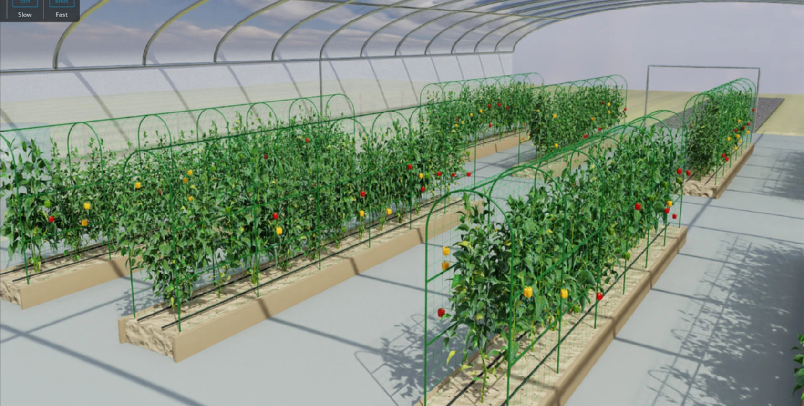

VR · MR 클라이언트 개발
CPR MR 좌표 정합, 공통 VR 프레임워크와 다중 기기 운영 시스템, 대형 도시맵 구성·최적화를 수행했습니다.
쉐어박스 · 엠라인스튜디오 / Unreal Engine 기반 개발
Unreal Engine 기반 VR·MR 개발에서 쌓은 좌표, 물리, 실시간 3D 경험을 로봇 시뮬레이션으로 확장하고 있습니다.
Isaac Sim과 ROS 2를 연결해 실제 로봇과 같은 업무 코드를 시험합니다. 현상을 계측하고 원인을 분리해, 검증 가능한 개선으로 이어가는 개발을 지향합니다.

실시간 3D 콘텐츠에서
로봇과 설비를 연결하는 시스템으로.
CPR MR 좌표 정합, 공통 VR 프레임워크와 다중 기기 운영 시스템, 대형 도시맵 구성·최적화를 수행했습니다.
STM32 영상 HMI, PLC 자동 분류 설비, SafeEye 안전 감지를 통해 하드웨어와 소프트웨어를 연결하고 결과를 비교·분석했습니다.
농장·로봇·센서 환경을 구축하고, 실물과 공유하는 ROS 2 코드의 주행 시험과 내부 파이프라인 최적화를 진행하고 있습니다.
실제 화면, 원인 분석, 측정 결과.
다섯 프로젝트의 핵심을 담았습니다.
농장을 만들고, 같은 코드로 주행을 검증하고, 실행 병목을 줄였습니다.
구조물부터 식생·과실까지 구성하고, 촬영 조건을 바꿔 학습 데이터를 생성했습니다. 주행 지도와 역할별 경로도 같은 환경에 맞췄습니다.
| 재배 베드 / 작업 면 | 8 / 16 |
|---|---|
| 예찰 관측점 | 80개 |
| 지도 해상도 | 5cm / pixel |
| 배치 | 로봇 3종 · 선별장 |
기존 SLAM 기반 지도에 HCR 선별장 점유 영역을 반영했습니다. 선은 저장된 계획 경로이며, 주행 완료 궤적과 구분합니다.
촬영 조건은 다양하게, 라벨 기준은 일관되게.
RGB 후처리와 라벨을 분리하고 seed로 생성 조건을 재현하도록 구성했습니다.
4조건 × 576장. 위 이미지는 조건별 예시이며 구도가 같은 조명 대조시험은 아닙니다.
주행 물리 처리와 카메라 처리 병목을 분리했습니다. 서로 다른 시험의 FPS와 처리시간은 각 조건에 맞는 지표로 비교했습니다.
| 물리 비용 / frame | 34.93 → 5.49ms |
|---|---|
| 별도 주행 각 3회 평균 | 17.27 → 28.00 FPS |
2026.10.14 / 2로봇·3카메라·60Hz 물리. 상단 비교는 ROS/Nav2 없는 짧은 직선 시험. 별도 반복 주행은 성공·실패가 섞인 성능 기록입니다.
| 깊이 정렬 계산 | 39.9 → 4.1ms |
|---|---|
| 실시간 진행속도 | 0.239 → 0.403배 |
2026.10.21 / 단일 정차 로봇·5스트림·CPU60Hz·촬영30Hz. 전체 루프 시간이며 화면 FPS가 아닙니다. 최신 U20 전체 사이클 측정과 구분합니다.
영상 품질과 입력 조건을 유지하며 불필요한 계산을 줄였습니다.
평균 처리량과 단계별 비용을 함께 확인해 개선의 원인을 설명할 수 있게 했습니다.
영상·검출 결과·동작 상태를 한 화면에.
처리율과 응답 지연을 구분해 시험을 해석했습니다.
공급·판별·적재를 병렬로 연결하고,
6개 슬롯의 상태와 불출을 HMI에서 관리했습니다.
보호구 착용과 위험구역 접근을 판별하고,
인원수에 따른 정확도·처리 속도를 비교했습니다.
실물·가상 환자의 좌표 정합부터
공통 VR 프레임워크와 대형 도시맵 최적화까지.